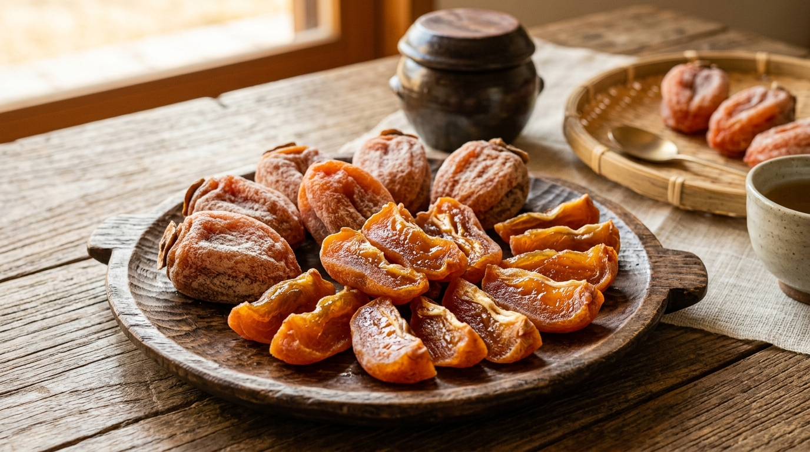
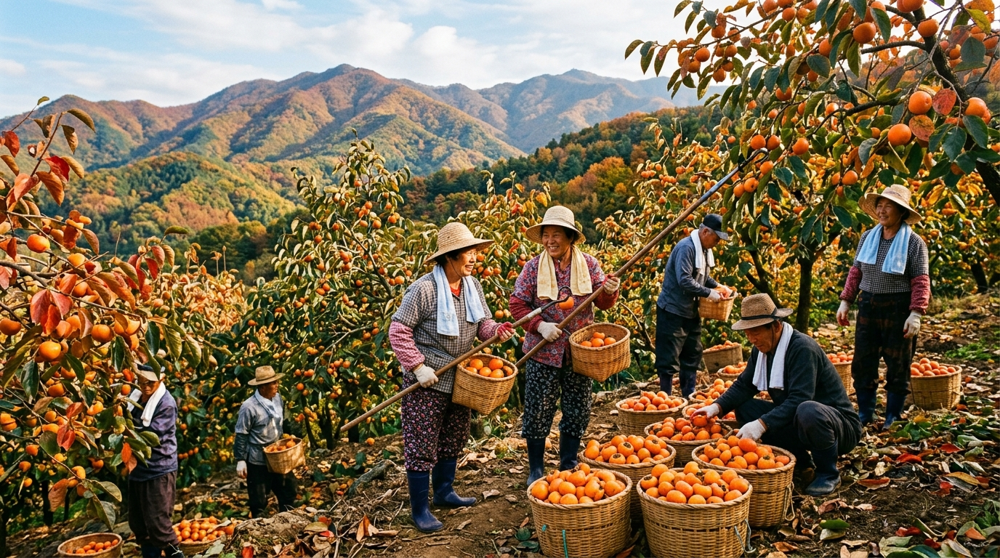
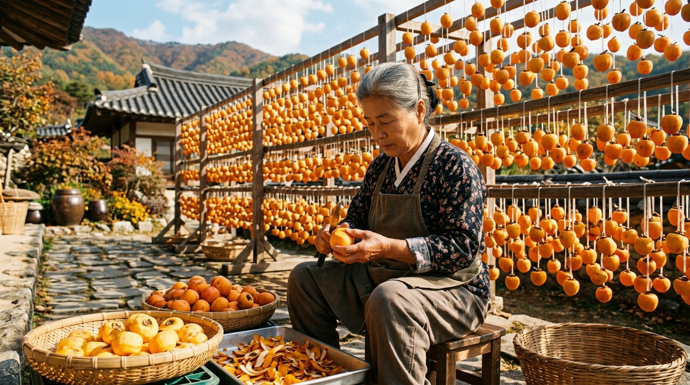
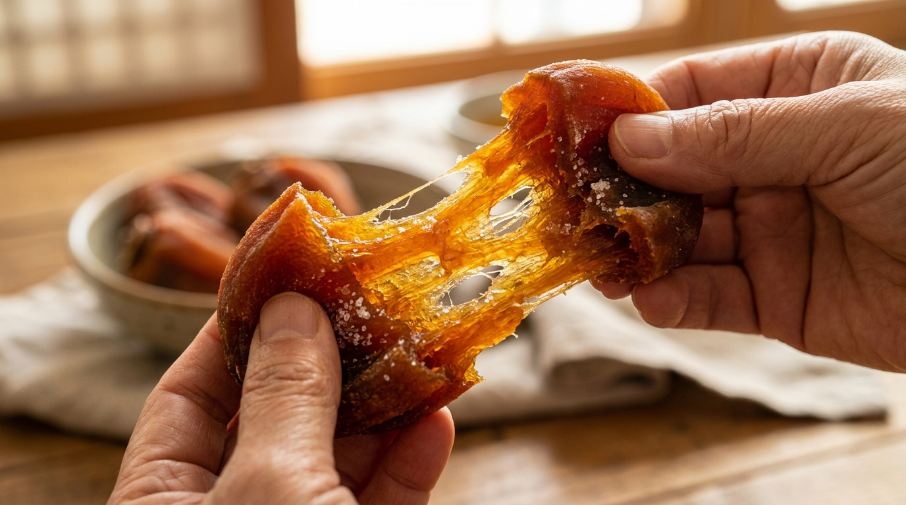
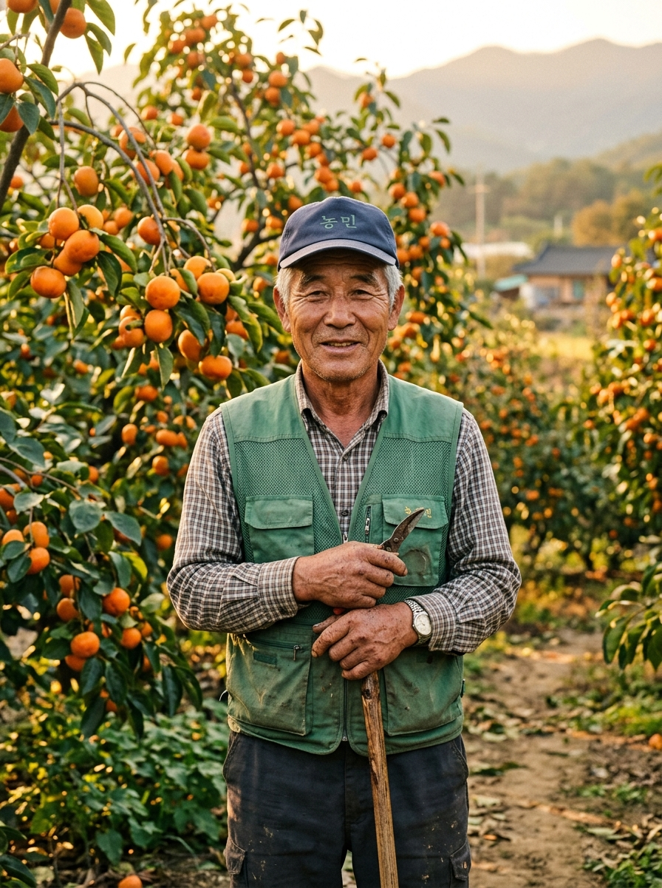
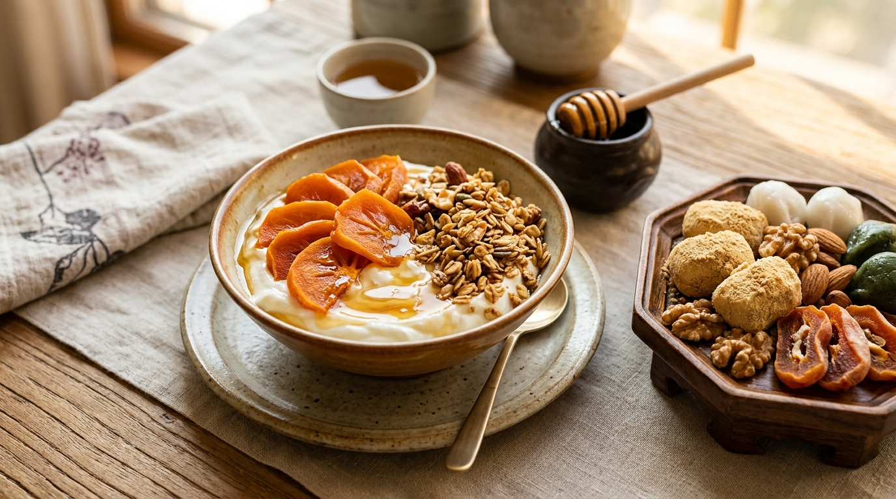
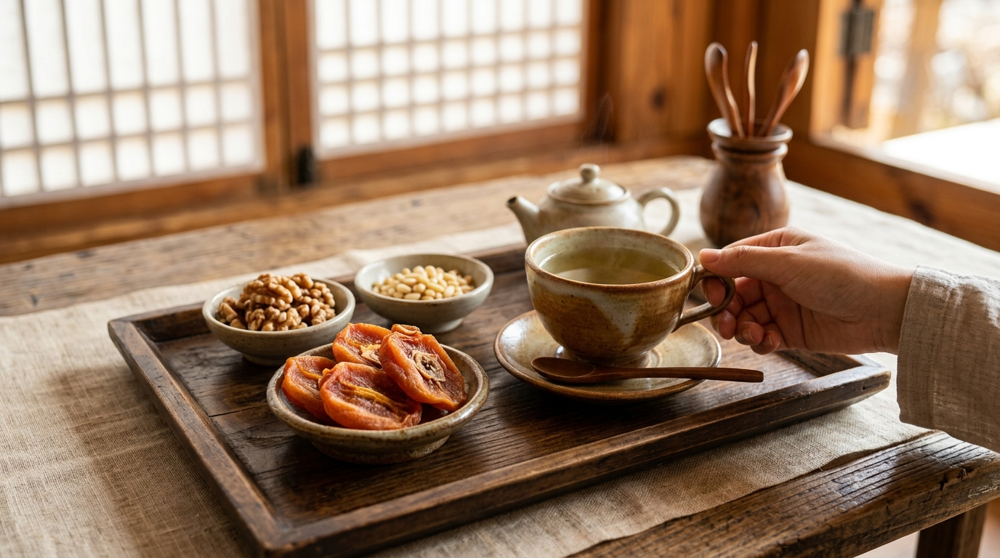
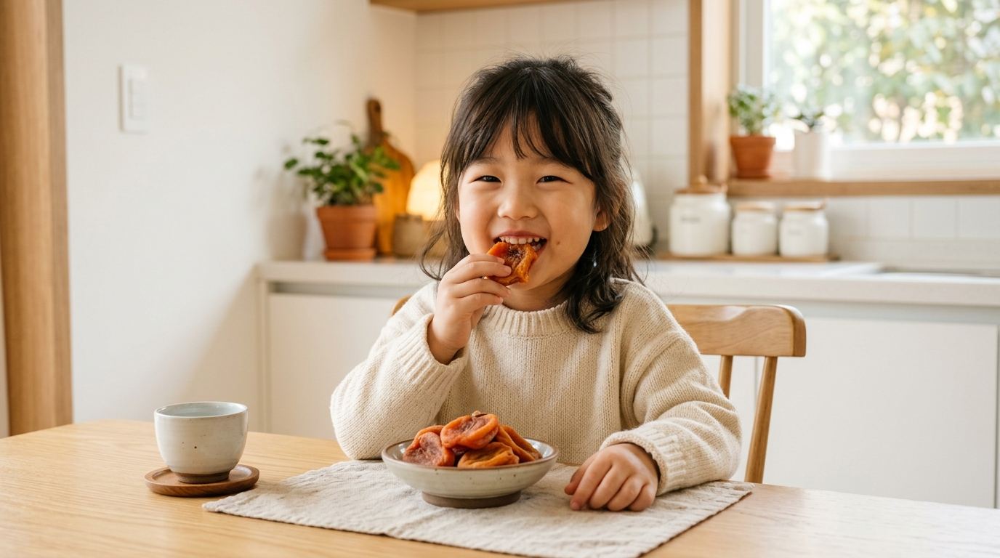
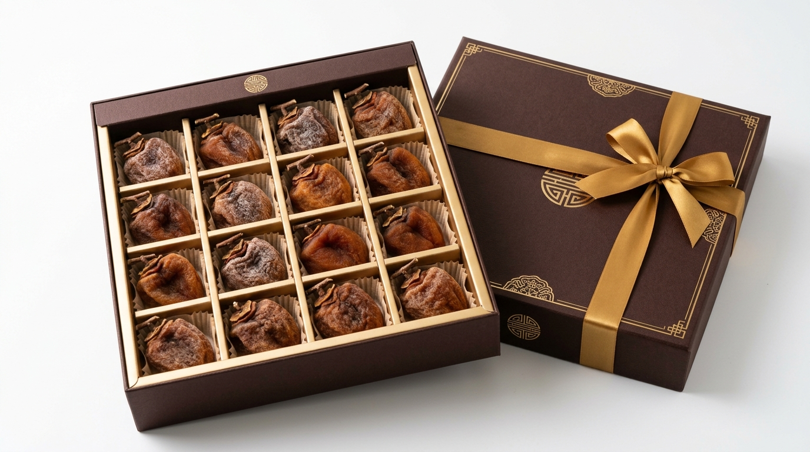

먼지 한 톨 없는 무균 클린룸 가공
합성농약·화학비료 0% 지리산 감





| 제품명 | 지리산 하동 감말랭이 |
|---|---|
| 식품의 유형 | 건과류 (자연건시) |
| 원재료명 및 함량 | 감 100% (국내산 경남 하동 무농약) |
| 내용량 | 200g / 500g / 1kg (옵션별 상이) |
| 생산자 및 소재지 | 하동지리산감영농조합법인 (경남 하동군 악양면) |
| 보관방법 | 수령 즉시 냉동보관 (영하 18℃ 이하) |
| 소비자상담번호 | 055-883-XXXX (평일 09:00 ~ 18:00) |